<!DOCTYPE html>
<html lang="en">

<head>
  <meta charset="utf-8">
  <meta name="viewport" content="width=device-width, initial-scale=1">
  <link rel="stylesheet" href="https://maxcdn.bootstrapcdn.com/bootstrap/3.3.7/css/bootstrap.min.css">
  <script src="https://ajax.googleapis.com/ajax/libs/jquery/3.2.1/jquery.min.js"></script>
  <script src="https://maxcdn.bootstrapcdn.com/bootstrap/3.3.7/js/bootstrap.min.js"></script>

  <link rel="stylesheet" href="styles.css">

  <title>Pip Turner - Portfolio</title>
  <link rel="shortcut icon" href="images/favicon.png" />
  <meta name="viewport" content="width=device-width" />

  <script>
    (function(i, s, o, g, r, a, m) {
      i['GoogleAnalyticsObject'] = r;
      i[r] = i[r] || function() {
        (i[r].q = i[r].q || []).push(arguments)
      }, i[r].l = 1 * new Date();
      a = s.createElement(o),
        m = s.getElementsByTagName(o)[0];
      a.async = 1;
      a.src = g;
      m.parentNode.insertBefore(a, m)
    })(window, document, 'script', 'https://www.google-analytics.com/analytics.js', 'ga');

    ga('create', 'UA-74842236-2', 'auto');
    ga('send', 'pageview');
  </script>

  <style>
    @media screen and(max-width: 767px) {
      body {
        color: red;
      }
    }
  </style>
</head>

</html>

<body data-spy="scroll" data-target="#myScrollspy" data-offset="50">

  <nav class="navbar navbar-inverse">
    <div class="container-fluid">
      <div class="navbar-header">
        <button type="button" class="navbar-toggle" data-toggle="collapse" data-target="#myNavbar">
          <span class="icon-bar"></span>
          <span class="icon-bar"></span>
          <span class="icon-bar"></span>
        </button>
        <a class="navbar-brand navbartext" href="#">Pip Turner</a>
      </div>
      <div class="collapse navbar-collapse" id="myNavbar">
        <ul class="nav navbar-nav">
          <li class="navbartext"><a href="index.html">About</a></li>
          <li class="navbartext"><a href="cv.html">CV</a></li>
          <li class="active navbartext"><a href="portfolio.html">Portfolio</a></li>
          <li class="navbartext"><a href="https://medium.com/pip-writes-stuff/">Blog</a></li>
        </ul>
      </div>
    </div>
  </nav>


  <!--Side Nav Bar-->
  <nav class="col-md-3 sidebarNav hide-mobile" id="myScrollspy">
    <ul class="nav nav-pills nav-stacked" data-spy="affix" data-offset-top="205">
      <li class="active"><a href="#games">Games</a></li>
      <li><a href="#uni">University Work</a></li>
      <li><a href="#other">Other</a></li>
    </ul>
  </nav>


  <nav class="col-md-3 sidebarNav show-mobile" id="myScrollspy">
    <ul class="nav nav-pills nav-stacked" data-offset-top="205">
      <li class="active"><a href="#games">Games</a></li>
      <li><a href="#uni">University Work</a></li>
      <li><a href="#writing">Other</a></li>
    </ul>
  </nav>
  <!--GAMES-->
  <div class="col-md-9">
    <div class="row">
      <div class="container text-center" id="games">
        <h1>Games</h1>


        <!--QRTTNBPBYTROAYALID Section-->
        <div class="row">
          <div class="col-md-3 image">
            <a href="images/QRTTNBPBYTROAYALID.png">
        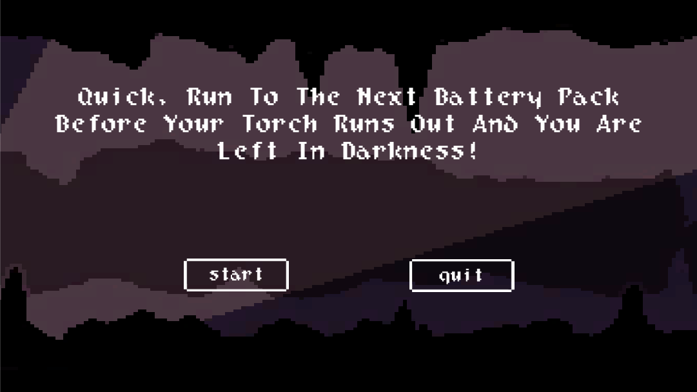
      </a>
          </div>
          <div class="col-md-9 description">

            <h3>QRTTNBPBYTROAYALID <small>(2017, Unity, C#)</small></h3>
            <p>Quick, Run to The Next Battery Pack Before Your Torch Runs Out and You Are Left In Darkness!, (or QRTTNBPBYTROAYALID), is an infinite runner created by myself and <a href="https://twitter.com/spacebabedev"> Poppy Lomax</a> for Ludum Dare #39
              - a game jam run over three days. Poppy worked on the art and platform design, whilst I worked on the code, Unity gubbins and game feel. We are planning to polish it and add in extra features.</p>
            Download it
            <a href="https://hozomeen.itch.io/quick-run-to-the-next-battery-pack-before-your-torch-runs-out-and-you-are-left-in-darkness"> here</a>!
          </div>
        </div>
        <!--End of QRTTNBPBYTROAYALID section-->

        <!--Rare Cover Letter Section-->
        <div class="row">
          <div class="col-md-3 image">
            <a href="images/RareCoverLetter.png">
            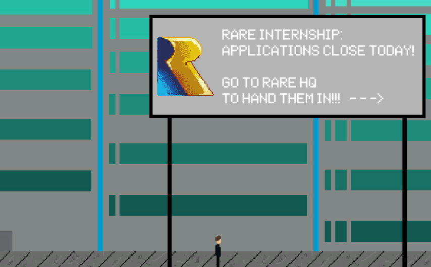
          </a>
          </div>
          <div class="col-md-9 description">

            <h3>Rare Cover Letter <small>(2016, Unity, C#)</small></h3>
            <p>Rare Cover Letter is an interactive cover letter I made in a few days in order to apply to Rare's Industrial Placement. They specified they wanted something creative, instead of a normal cover letter - so I made this.</p>
            Play it in your browser,
            <a href="https://dwarph.itch.io/rare-cover-letter"> here</a>!
          </div>
        </div>
        <!--End of Rare Cover Letter section-->

        <!--Space Invaders Section-->
        <div class="row">
          <div class="col-md-3 image">
            <a href="images/SpaceInvaders.png">
                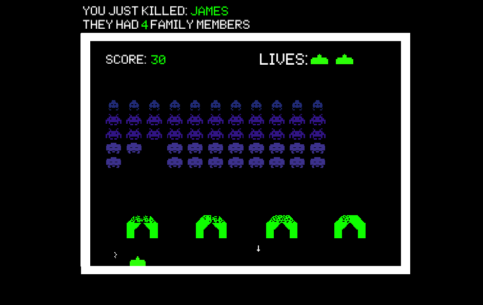
              </a>
          </div>
          <div class="col-md-9 description">

            <h3>Space Invaders <small>(2016, Unity, C#)</small></h3>
            <p>I made this Space Invaders clone (with a small twist) last summer as a way to become more familiar with Unity and its features. Sound effects are provided by <a href="https://soundcloud.com/xeno_uk">xeno_</a>.</p>
            Play it in your browser,
            <a href="https://dwarph.itch.io/space-invaders"> here</a>!
          </div>
        </div>
        <!--End of Space Invaders section-->
      </div>
    </div>

    <!-- UNIVERSITY WORK -->
    <div class="row">
      <div class="container text-center" id="uni">
        <hr/>
        <h3>University Work</h3>

        <!--Major Project-->
        <div class="row">
          <div class="col-md-3 image">
            <a href="images/Mountains.png">
                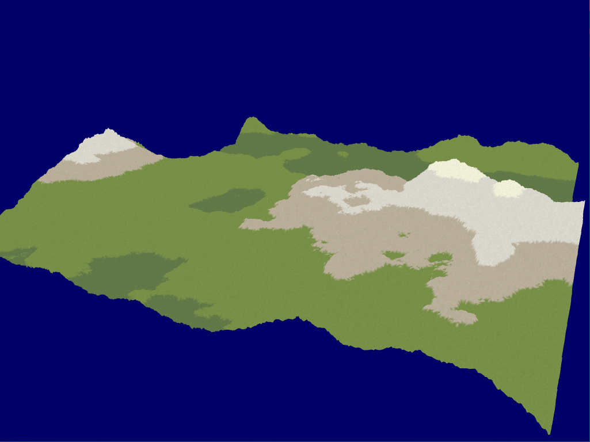
              </a>
          </div>
          <div class="col-md-9 description">

            <h3> Major Project - 3D Procedurally Generated Nature Scene<small> (2018, C++, OpenGL)</small></h3> A 3D Procedurally Generated Nature Scene, made with OpenGL and C++. Whilst a lot of this project could be accomplished using pre-existing libraries, this project involves me implementing all the required algorithms from scratch. I chose this
            project as my final year project in order to become more familiar with low level graphics APIs, to learn about procedural generation techniques and to continue to build my C++ Skills. This was my final University project, the equivalent of
            other degrees' dissertation.
          </div>
        </div>
        <!--Major Project-->


        <!--3D Scene Three.js-->
        <div class="row">
          <div class="col-md-3 image">
            <a href="pitCS32420.html">
                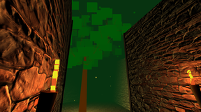
              </a>
          </div>
          <div class="col-md-9 description">

            <h3>3D Scene made with Three.js<small> (2017, JavaScript, Three.js)</small></h3> For my Computer Graphics And Games module, our assignment was to make a series of rooms using Three.js. As the assignment's purpose was to help us learn how to effectively use graphics libraries, I challenged myself to create everything using
            Three.js. Due to this, a lot of the models in this project are primitive, but I now have a greater appreciation of graphics libraries. I am particularly proud that I managed to create a procedurally generated tree in the limited time I had,
            using a space colonisation algorithm. I was awarded a First for the project.
            <br /> You can play with the scene <a href="http://pipturner.co.uk/pitCS32420.html">here</a>. It is best experienced in Firefox (Chrome currently has some movement issues.).
          </div>
        </div>
        <!--3D Scene Three.js-->

        <!--Search For A Good Book Section-->
        <div class="row">
          <div class="col-md-3 image">
            <a href="https://www.youtube.com/watch?v=VLY-zjLFJ3g">
                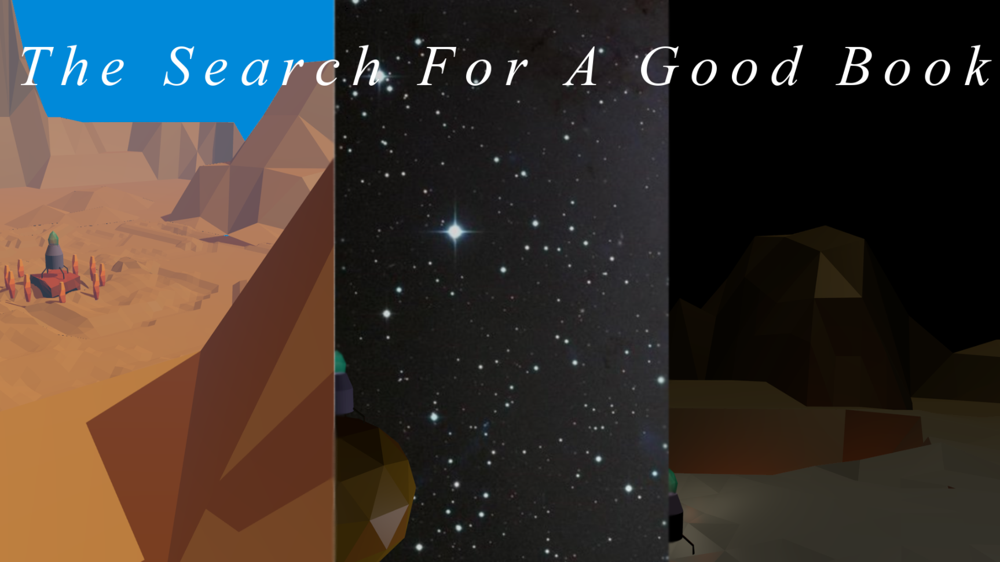
              </a>
          </div>
          <div class="col-md-9 description">

            <h3>The Search For A Good Book <small>(2017, Blender)</small></h3> For my Applied Graphics module we had to make a 1-2 minute 3D animated video using blender. I chose to use a low poly style as it was the best way to make something look good, whilst keeping creation difficulty down. I was awarded a First
            for my animation and accompanying making of video.
            <br /> You can watch the video on <a href="https://www.youtube.com/watch?v=VLY-zjLFJ3g">Youtube</a>.
          </div>
        </div>
        <!--End of Search For A Good Book section-->


        <!--Buccaneer Section-->
        <div class="row">
          <div class="col-md-3 image">
            <a href="images/Buccaneer.png">
                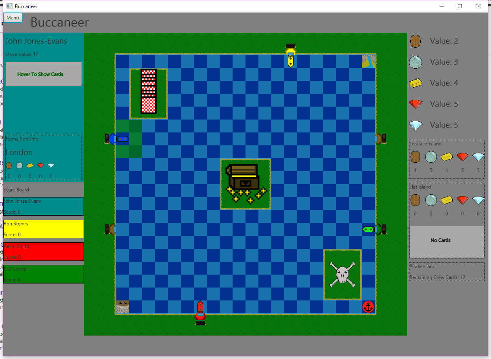
              </a>
          </div>
          <div class="col-md-9 description">

            <h3>Buccaneer <small>(2017, Java)</small></h3>
            <p>
              Buccaneer was a group project during my second year. We had to adapt Buccaneer (an old board game) by creating it using Java.
            </p>

            <p>This was a group project, as part of my second year of university. My role within my team was Lead Architect - I was in charge of the majority of the backend of the program, making sure it followed all the given requirements and interacted
              nicely with the UI. This role was great as it pushed me as a programmer and by neccessity gave me opportunity to lead and delegate various tasks to the rest of the group, whilst also reporting back to our group leader.<br /> We were awarded
              a First for our finished program. </p>
          </div>
        </div>
        <!--End of Buccaneer section-->

        <!--Inglenook Sidings Section-->
        <div class="row">
          <div class="col-md-3 image">
            <a href="images/InglenookSidings.png">
                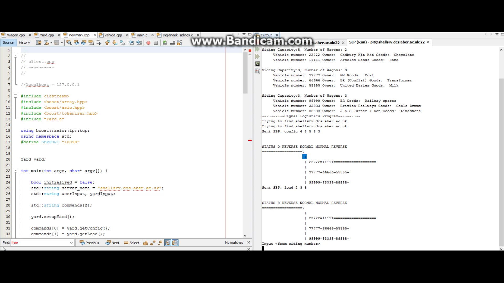
              </a>
          </div>
          <div class="col-md-9 description">

            <h3>Inglenook Sidings <small>(2016, C++, C)</small></h3> As a project for my second year C++ and C module, we had to make a client-server program (in C++ and C respectively), that interacted with each other within a console environment and enabled the user to solve the inglenook sidings problem.
            I completed this project as well as the flair marks, and was awarded a First.
          </div>
        </div>
        <!--End of Inglenook Sidings section-->

        <!--BonksAndZaps Section-->
        <div class="row">
          <div class="col-md-3 image">
            <a href="images/BonksAndZaps.png">
                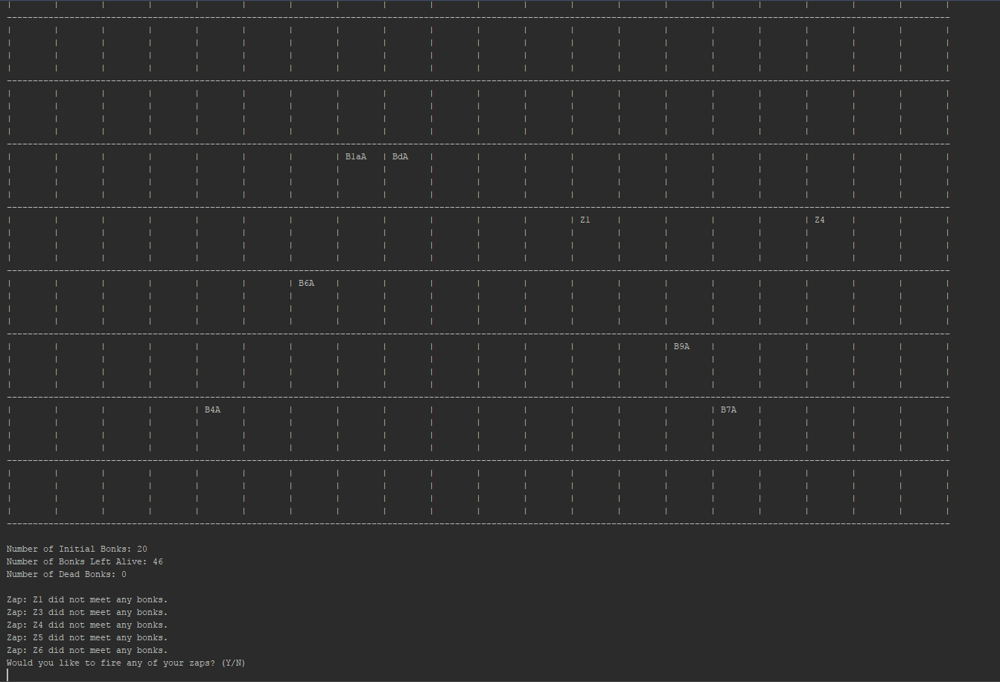
              </a>
          </div>
          <div class="col-md-9 description">

            <h3>Bonks And Zaps <small>(2016, Java)</small></h3> As the final project for a first year module, I had to create a game similar to Conway’s Game of Life that our Lecturer had come up with, called “Bonks and Zaps”. Bonks and Zaps live in a grid, bonks reproduce together, Zaps kill bonks, both
            move squares within the grid each cycle. As well as completing the main part of the assignment, we were awarded extra marks for flair. I gave the Zaps basic “morality” – the more bonks they killed, the less likely they were to commit the murder.
            I also added the ability to fire the Zaps, upon which the program would generate a random backstory of what happened to the fired Zap. My main challenge was creating a scalable generated grid within a console based environment, creating the
            entire program from scratch and coming up with a good system for the backstories.<br /> I was awarded a First for the assignment.
          </div>
        </div>
        <!--End of BonksAndZaps section-->

      </div>
    </div>

    <!-- Other Section -->
    <div class="row">
      <div class="container text-center" id="other">
        <hr/>
        <h3>Other</h3>

        <!--Pip Writes Stuff Section-->
        <div class="row">
          <div class="col-md-3 image">
            <a href="https://medium.com/pip-writes-stuff/">
                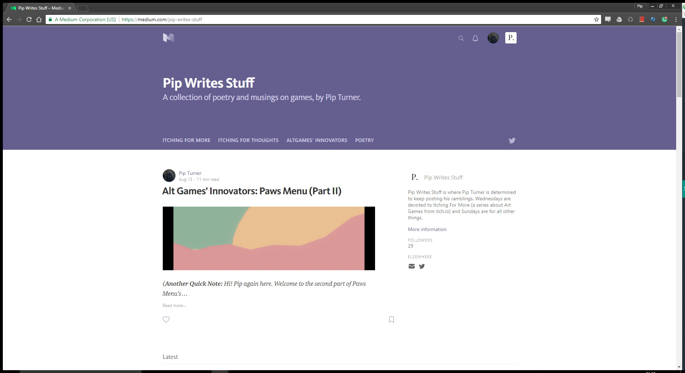
              </a>
          </div>
          <div class="col-md-9 description end">

            <h3>Pip Writes Stuff <small>(2014 - Ongoing)</small></h3> I have run a blog called <a href="https://medium.com/pip-writes-stuff/">Pip Writes Stuff</a> since 2014. I write and post two posts a week to my blog. Recently my blog has begun to focus on smaller games and their makers - I've run a weekly
            feature since 2015 called <a href="https://medium.com/pip-writes-stuff/tagged/itching-for-more">"Itching For More"</a>, which focuses on small, unknown alt games, primarily sourced from itch.io. On top of this, I've begun to interview the
            developers behind smaller games, in a series called
            <a href="https://medium.com/pip-writes-stuff/tagged/altgames-innovators">"Altgames' Innovators"</a>. My writing has been featured twice (<a href="https://www.rockpapershotgun.com/2015/08/23/the-sunday-papers-368/">1</a>,
            <a href="https://www.rockpapershotgun.com/2016/05/01/the-sunday-papers-403/">2</a>) on Rock Paper Shotgun's Sunday Papers.
          </div>
        </div>
        <!--End of Pip Writes STuff Section section-->

        <!--Website-->
        <div class="row">
          <div class="col-md-3 image">
            <a href="index.html">
              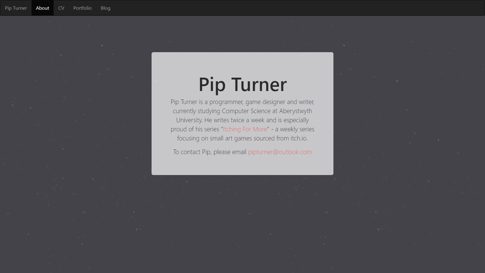
            </a>
          </div>
          <div class="col-md-9 description">

            <h3>pipturner.co.uk<small> (2017, HTML5, Bootstrap)</small></h3> I made this website from scratch to replace a former wordpress based site. This new website, whilst losing the Content Management GUI convenience of Wordpress is better suited to my needs. Is still easy to maintain and helped give me a better
            understanding of modern HTML5 frameworks (ie Bootstrap) and modern responsive design.
          </div>
        </div>
        <!--Website-->
      </div>
    </div>
  </div>
  </div>
  </div>
</body>